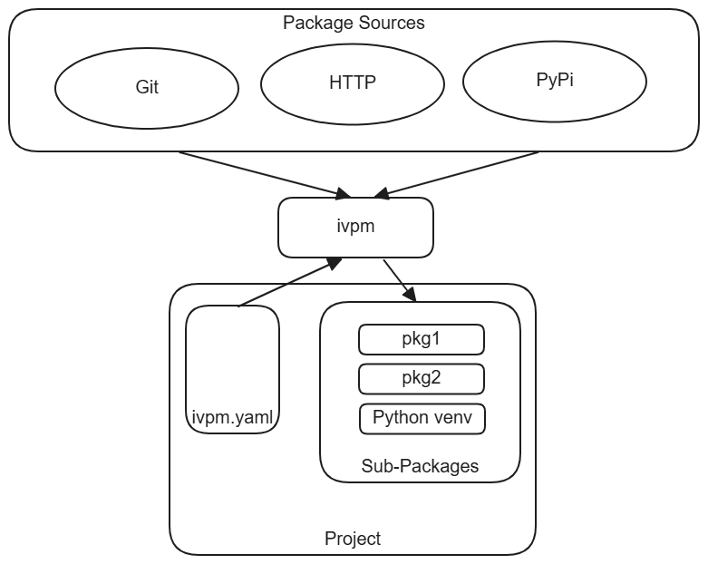

Introduction
What is IVPM?
IVPM (IP and Verification Package Manager) is a lightweight, project-local
package manager. It fetches dependencies into a packages/ directory
inside your project, processes them through a handler pipeline, and optionally manages a Python virtual environment. Each
project is fully self-contained – there is no global state shared between
projects.

Key Capabilities
Project-local dependency management – all dependencies live inside the project. No system-wide installation, no version conflicts between projects.
Recursive sub-dependency resolution – when a dependency has its own
ivpm.yaml, IVPM resolves its dependencies automatically. Dependency sets let you control which sub-dependencies are loaded (e.g., dev vs release).Python virtual environment management – the built-in Python handler creates a project-local venv and installs packages via pip or uv. Source packages are installed in editable mode for co-development.
Git integration –
ivpm statusandivpm synclet you track changes, update from upstream, and work with editable Git dependencies.Caching and reproducibility – cached packages are shared across projects via symlinks. A lock file records exact resolved versions for deterministic reproduction.
Extensible handler pipeline – handlers process and aggregate information from fetched packages. IVPM ships handlers for Python, direnv, and AI agent skills. Third-party handlers can be added via Python entry points.
Where IVPM Fits
Unlike pip or conda, IVPM is not a Python-only tool. It manages
heterogeneous dependency trees that mix Python packages with non-Python
assets such as HDL source, data files, pre-built binaries, and
configuration. Unlike Nix or Bazel, IVPM is lightweight – a single YAML
file and one command (ivpm update) are all you need.
IVPM excels in the co-development scenario: when your project’s
dependencies are repositories you also contribute to. Source dependencies
are checked out with full Git history, installed in editable mode, and
manageable via ivpm status and ivpm sync.
Example Domains
IVPM originated in hardware verification – managing SoC designs composed of Verilog IPs, Bus Functional Models, and Python test frameworks – but it is domain-neutral. Any project that needs a self-contained, reproducible set of mixed dependencies benefits from IVPM.
Hardware verification project:
package:
name: soc-verification
default-dep-set: default-dev
dep-sets:
- name: default
deps:
- name: cpu-core
url: https://github.com/org/cpu.git
tag: v1.0
- name: default-dev
uses: default
deps:
- name: cocotb
src: pypi
- name: bus-models
url: https://github.com/org/bus-models.git
Pure Python project:
package:
name: data-pipeline
default-dep-set: default-dev
dep-sets:
- name: default
deps:
- name: pandas
src: pypi
- name: numpy
src: pypi
- name: default-dev
uses: default
deps:
- name: pytest
src: pypi
Both projects share the same structure: an ivpm.yaml file, a
packages/ directory, and the same ivpm update / ivpm activate
workflow.
Next Steps
Getting Started with IVPM – Install IVPM and set up your first project
Core Concepts – Understand the update pipeline and mental model